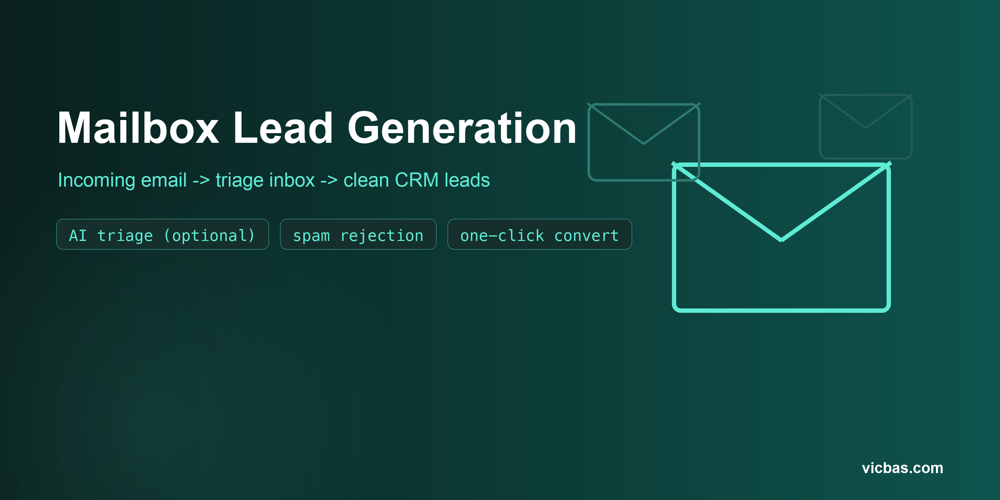

<section class="oe_dark">
  <div class="oe_row oe_spaced" style="max-width: 920px; margin: 0 auto">
    <div class="oe_span12 text-center" style="padding: 30px 0">
      <h2 class="oe_slogan" style="font-size: 2.3em; color: #0d9488">
        Mailbox Lead Generation
      </h2>
      <h3
        class="oe_slogan"
        style="font-size: 1.2em; color: #666; font-weight: 300"
      >
        A decantation inbox for your incoming email: every message is
        classified, optionally triaged by AI, matched against your catalog and
        converted into clean CRM leads.
      </h3>
      <p style="margin-top: 10px; font-size: 1.05em">
        Developed by
        <a
          href="https://vicbas.com"
          target="_blank"
          style="font-weight: bold; color: #0d9488"
          >vicbas.com</a
        >
      </p>
    </div>
    <div class="oe_span12 text-center">
      <div class="oe_demo oe_picture oe_screenshot">
        
      </div>
    </div>
    <div class="oe_span12 oe_mt32 text-center" style="padding: 20px 0 6px">
      <h3 style="color: #0d9488">What it does</h3>
    </div>
    <div class="oe_span12 oe_mt16 text-center">
      <div class="oe_span4 oe_mt16 text-center">
        <span class="fa fa-inbox fa-3x" style="color: #0d9488"></span>
        <h4>Pre-stage inbox</h4>
        <p class="text-muted" style="text-align: left">
          Emails fetched from your mail server land as <em>Mailbox</em> records
          instead of going straight to sales — nothing reaches the pipeline
          unreviewed.
        </p>
      </div>
      <div class="oe_span4 oe_mt16 text-center">
        <span class="fa fa-tags fa-3x" style="color: #0d9488"></span>
        <h4>Classification by destination</h4>
        <p class="text-muted" style="text-align: left">
          Inquiry addresses (buyers) and acquisition addresses (suppliers) are
          classified by arrival address, so each type follows its own flow.
        </p>
      </div>
      <div class="oe_span4 oe_mt16 text-center">
        <span class="fa fa-magic fa-3x" style="color: #0d9488"></span>
        <h4>Optional AI triage</h4>
        <p class="text-muted" style="text-align: left">
          Any <strong>OpenAI-compatible endpoint</strong> summarizes,
          categorizes and extracts contact data; records are matched against
          your product catalog for suggestions. Leave the key empty and the
          module works fully without AI.
        </p>
      </div>
    </div>
    <div class="oe_span12 oe_mt32 text-center" style="padding: 20px 0 6px">
      <h3 style="color: #0d9488">How to use it</h3>
    </div>
    <div class="oe_span12 oe_mt16" style="text-align: left">
      <p class="text-muted">From install to first converted lead:</p>
      <ol style="padding-left: 20px">
        <li style="margin-bottom: 14px">
          <strong style="color: #0d9488">Install the module</strong
          ><br />Standard Community dependencies (crm). The python
          <code>requests</code> library is required for the optional AI triage.
        </li>
        <li style="margin-bottom: 14px">
          <strong style="color: #0d9488"
            >Configure the classification addresses</strong
          ><br />Settings → Mailbox Lead Generation: list the
          <em>inquiry</em> addresses and the <em>acquisition</em> addresses
          (comma separated). Everything else can stay on defaults.
        </li>
        <li style="margin-bottom: 14px">
          <strong style="color: #0d9488">Point fetchmail at the mailbox</strong
          ><br />Create an Incoming Mail Server whose server action creates
          records of model <strong>mailbox.lead.generation</strong> (the
          module's help shows the exact setup).
        </li>
        <li style="margin-bottom: 14px">
          <strong style="color: #0d9488"
            >Optional: connect an AI provider</strong
          ><br />In the same settings: base URL, API key, model, temperature,
          retries. Empty key = AI disabled. A cron (every 5 minutes) processes
          the pending queue.
        </li>
        <li style="margin-bottom: 14px">
          <strong style="color: #0d9488">Review and convert</strong><br />Open
          the Mailbox menu: read the email with its classification, review the
          AI summary and catalog suggestions, then
          <strong>Convert to Lead</strong>. Spam is rejected with one click.
        </li>
      </ol>
    </div>
    <div class="oe_span12 oe_mt32 text-center" style="padding: 20px 0 6px">
      <h3 style="color: #0d9488">Key features</h3>
    </div>
    <div class="oe_span12 oe_mt16" style="text-align: left">
      <table class="table table-bordered" style="background: #fff">
        <thead>
          <tr>
            <th style="background: #0d9488; color: #fff">Feature</th>
            <th style="background: #0d9488; color: #fff">Detail</th>
          </tr>
        </thead>
        <tbody>
          <tr>
            <td>Product matching</td>
            <td>
              Catalog keywords from the email body are matched against your
              product catalog (any product type) and offered as suggestions on
              the record.
            </td>
          </tr>
          <tr>
            <td>Spam rejection</td>
            <td>
              One click rejects an email before it ever touches the pipeline.
            </td>
          </tr>
          <tr>
            <td>Full traceability</td>
            <td>
              The original message, classification, AI output and suggestions
              stay attached to the record.
            </td>
          </tr>
          <tr>
            <td>Provider-agnostic AI</td>
            <td>
              OpenAI, Azure OpenAI, local vLLM/Ollama — any OpenAI-compatible
              endpoint works.
            </td>
          </tr>
          <tr>
            <td>Multilingual UI</td>
            <td>English + Spanish (es, es_CL) translations included.</td>
          </tr>
        </tbody>
      </table>
    </div>
    <div class="oe_span12 oe_mt32 text-center" style="padding: 20px 0 6px">
      <h3 style="color: #0d9488">Requirements</h3>
    </div>
    <div class="oe_span12 oe_mt16" style="text-align: left">
      <table class="table table-bordered" style="background: #fff">
        <thead>
          <tr>
            <th style="background: #0d9488; color: #fff"></th>
            <th style="background: #0d9488; color: #fff"></th>
          </tr>
        </thead>
        <tbody>
          <tr>
            <td>Odoo</td>
            <td>20.0 (Community; Enterprise also works)</td>
          </tr>
          <tr>
            <td>Dependencies</td>
            <td>crm (standard); python requests (AI)</td>
          </tr>
          <tr>
            <td>External services</td>
            <td>Optional: any OpenAI-compatible endpoint for triage</td>
          </tr>
        </tbody>
      </table>
    </div>
    <div class="oe_span12 oe_mt16" style="text-align: left">
      <div
        style="
          border-left: 4px solid #0d9488;
          background: #f8f9fa;
          padding: 10px 14px;
          border-radius: 4px;
        "
      >
        <span class="fa fa-shield" style="color: #0d9488"></span>
        <strong>Privacy note:</strong> when AI triage is enabled the email
        content is sent to the configured endpoint. Point it at a self-hosted
        model if that matters for your compliance — or leave the key empty to
        keep everything in-house.
      </div>
    </div>
  </div>
</section>
